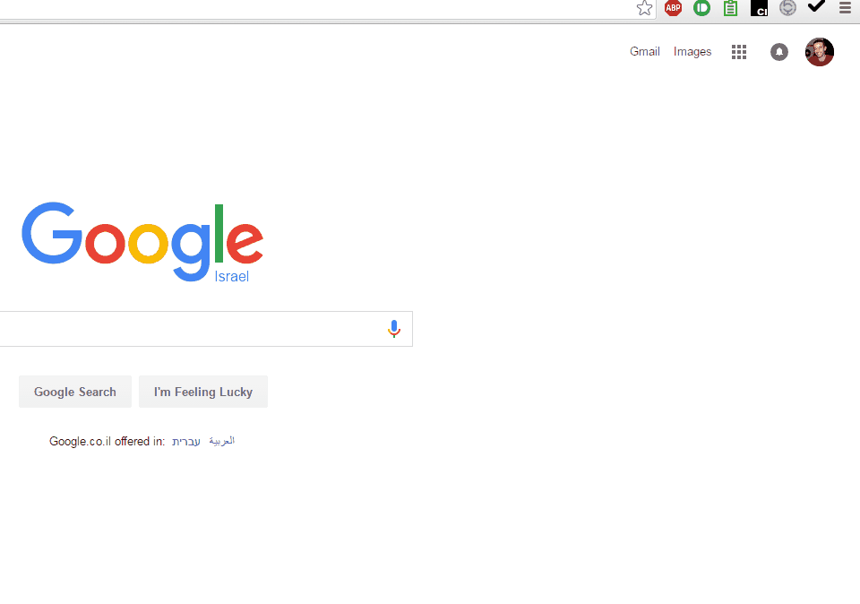
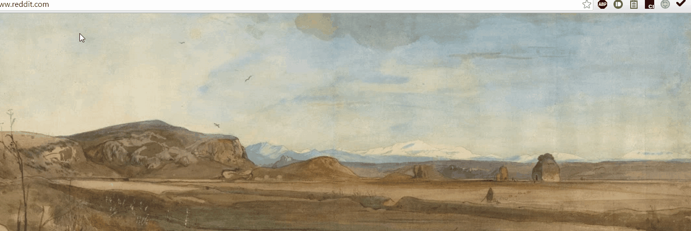
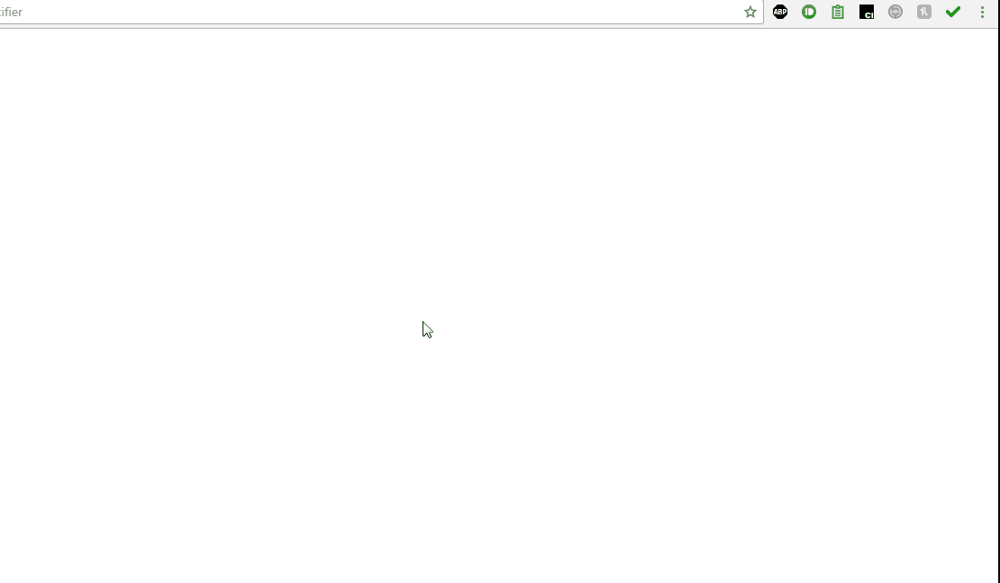
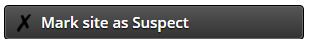

Please read the following instructions for the training phase.
Why Shark-King?
A phishing website imitates a trusted website, to attack the user (e.g. by stealing passwords). Our goal is to protect you from such attacks, which harm millions of users.
Shark-King: no more phishing!
By installing the Shark-King browser add-on, you will participate in our experiment of anti-phishing defenses, and protect yourself from phishing.
How does it work? Shark-King allows you to easily report suspect websites. To train you, Shark-King will (rarely) present fake versions of familiar websites.
Don't worry! Shark-King's fake sites will not harm you in any way, even if you fail to notice them. We protect your privacy carefully, as approved by the Bar-Ilan University Ethics Review Board.
Shark-King will not capture or save any personal information.
Shark-King awards you points when you succeed in detecting fake sites. View your current points and ranking in the bottom part of the Shark-King menu:

Don't get phished – become a Shark-King!
Training Phase
Now that you have completed the first phishing test, click on the "Phishing Game" button in order to be forwarded to a game that will help you learn more about protection against phishing. After completing the game, you will take a second and final phishing test, after which you will be able to start browsing as you like.
Shark-King maintains a list of Suspected Sites, to which you can add any site that you think is suspect.
Shark-king also maintains a list of Trusted Sites, which Shark-King protects with a more secure login process, as follows:
Safe Login Process
You will soon be asked to select a unique image. Then, when you log into a trusted site, Shark-King will display this image, along with three other images. Click on your unique image to login!

This simple step will help you identify most phishing attacks. If you reach a trusted site's login page, without passing through the image selection process, you should mark the site as suspect!
Please select a unique image that will be used from now on to identify you in the secure login process for Trusted Sites. You have two options:
Upload 4 personal images, selecting one to be your unique image
Select an image from the following standard images
If you choose to upload 4 personal images (only .jpg files accepted), do so here (remember - your unique image will be the one uploaded under "Unique"):
If you decide not to upload personal images, please select one of the following images as your unique image:
Training Phase
Now that you have selected your unique image, you will go through a short training phase, using the secure process described above.
We will now display 6 webpages, one after the other. If you notice the secure process (i.e. where you must choose the correct image out of the 4 images), you can mark the webpage as "Trusted". Otherwise, mark the webpage as "Suspect". To begin, click the "Start Training Phase" button.
Safe Login Process
Always click on Shark-King's icon in order to log into a trusted site.
This simple step will help you (and Shark-King) notice and foil most phishing attacks.
Never enter sensitive information into a trusted site, before clicking on Shark-King's icon and seeing the safe login message!

Training Phase
Now that you have completed the first phishing test, you will now go through a short training phase, using the secure process described above.
We will now display 6 webpages, one after the other. If you notice the secure process, you can mark the webpage as "Trusted", otherwise, mark the webpage as "Suspect". To begin, click the "Start Training Phase" button.
Whenever a phishing experiment is launched, you are expected to identify some type of security problem, and immediately report it by clicking "Mark site as Suspect" on the Shark-King menu:

When you identify a security problem correctly, you will be notified by Shark-King. If you did not identify the security problem, you will be notified as well, so you can learn to be more cautious next time.
Training Phase
Now that you have completed the first phishing test, you will now go through a short training phase, in which the add-on will provide feedback for your choices, as described above.
We will now display 6 webpages, one after the other. You should mark each site as "Trusted" or "Suspect", and read the feedback provided to you. To begin, click the "Start Training Phase" button.